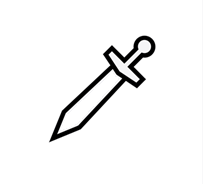
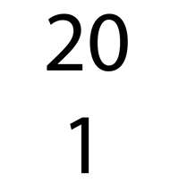
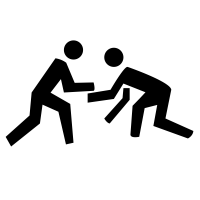

import {generalTableSelect2, highlightTableRowRet} from "./custom.js"
viewof mreaction = Inputs.button(html`<button style="color: black; background-color: lightgray;">Roll on Table</button>`, {value: 0, reduce: () => highlightTableRowRet("#monster-reaction", generalTableSelect2([1,20,0],[[1,1],[2,5],[6,9],[10,11],[12,15],[16,19],[20,20]]))})
md`d20: ${mreaction}`20 Combat Details
I raised my shield to fend off one of the monsters, and hewed at another with my sword, but I missed my first swing. Uric swung at one of the monsters and struck it, but his sword did the bony thing little harm. I saw that Lucul still stood by the door; of Harbek there was no sign. Fortunately, Lucul also had a torch.
Lucul raised his holy symbol and called in a loud voice, “In the name of Enke, begone!” To my surprise, several of the monsters turned as if afraid and ran out the door, disappearing into the gloom. Unfortunately, this left quite a few of them still in the room.
Even as I saw all this, I continued to hack at the monsters. It took two good blows to down the first one; it appeared that Uric was having similar trouble with the monsters. Then one of the skeletons hit him, just a minor wound, but still, I felt good that I had invested my part of the proceeds of our last excursion in a suit of plate mail armor; I was shrugging off blows that would have harmed me were I still wearing chain mail.
To my surprise, I saw Lucul down one of the monsters in a single blow, then do the same to another in his very next strike. His mace, Sea Fury, seemed to be much more effective against the monsters than our swords. As I finally managed to down a second skeleton, I heard a high-pitched yell… it was Harbek, a little ways down the hallway, and he was throwing something.
There was a sound of glass breaking, and I felt a splash of water on my face. Several of the skeletons began to smoke, and then one of them fell in a heap. Holy water, I decided, but I didn’t have time to think about it. I just kept hacking at the skeletons.
By the time they were all gone, I had taken a wound, and Uric had taken a second. We had one potion of healing left of those that Lucul’s temple had given us; Uric told me to drink it, but I could tell he was in worse shape than I, so I insisted he take it.
Then we turned back to the sarcophagus…
Surprise
When surprise is possible, roll a DC for each side which might be surprised. Normal characters are surprised on a DC13. Elves are surprised on a DC15. Surprised characters are unable to act for one round. Characters or creatures which are well hidden and prepared to perform an ambush get a +3 to surprise.
For example: Drahff the Human Fighter and Morningstar the Elven Fighter/Magic-User open a door and come face-to-face with a party of goblins. The DM rolls a DC for the goblins; if they roll less than 13, they are all surprised. Then the DM rolls a DC for Drahff and Morningstar. If Drahff’s roll is less than 13, he is surprised; if Morningstar’s roll is less than 15, she is surprised.
Surprised characters or creatures stand flat-footed for one round. They still defend themselves, so there is no penalty to Armor Class, but they cannot move nor attack during the round of surprise.
Morale
NPCs and monsters often seek to avoid death. Each has a Morale score from 1 to 20. Roll 1d20. If the roll is equal to or greater than the Morale score, the creatures will fight. If lower, they may lose their nerve.
Morale 1: Rarely fails and 95% of the time fights to the death.
When to Check Morale:
- At first encounter with opposition.
- Again when reduced to half strength (by numbers or hit points).
Adjustments:
The DM can modify a creature’s Morale score by up to +3 or -3, except for a score of 20.
Steps to Use Morale:
1. Determine Morale Score:
- Base scores range from 1 to 20 and can be influenced by:
- Leadership quality
- Previous battle outcomes
- Specific traits (like fearlessness)
2. Trigger Morale Check:
- Check under these conditions:
- Taking heavy casualties (losing half).
- Facing a powerful enemy.
- Fear effects or spells.
- Significant events (e.g., leader’s defeat).
3. Make the Check:
- Roll 1d20 and adjust for any bonuses or penalties (e.g., +2 for a strong leader, -3 for fear).
- Compare the total to the Morale score.
4. Interpret Results:
- Greater than Morale Score: NPCs fight or stay loyal.
- Less than Morale Score: NPCs may:
- Flee: Attempt to escape.
- Surrender: Yield if it seems best.
- Panic: Act irrationally, risking danger to themselves or others.
5. Consequences of Failure:
- Disorganization may occur, leading to disadvantage on future actions.
- Other nearby NPCs may also need to make morale checks.
6. Reinforcements:
- Successful actions or morale-boosting events can provide bonuses to future morale checks.
Example:
- Scenario: Mercenaries (Morale Score: 15) are ambushed.
- Roll: DM rolls a 10, with a -1 penalty for past losses, totaling 9.
- Outcome: Since 9 is less than 15, the mercenaries flee or surrender.
| Cowardly | Medium | Brave | Very Brave | Fight to the Death |
|---|---|---|---|---|
| 15 | 10 | 5 | 2 | 1 |
Note that special rules apply to retainers; see the relevant rules in the Hirelings section, above.
Reaction Table
When a group of player characters encounters one or more monsters or NPCs, it’s important to determine how these creatures will react to the party. While some reactions are obvious—such as zombies guarding a tomb almost always attacking intruders—others are not as clear-cut.
In situations where the reaction of the monsters or NPCs to the party is uncertain, particularly when talking, bluffing, or trading is involved, a reaction roll may be made. The Dungeon Master rolls a d20, adding the Charisma bonus (or applying the Charisma penalty) of the “lead” character, along with any other adjustments they feel are reasonable, and consults the table below:
| Adjusted Roll | Reaction |
|---|---|
| 1 or less (5%) | Violently hostile, immediate Attack |
| 2-5 (20%) | Hostile, immediate Attack |
| 6-9 (20%) | Uncertain but prone to negative |
| 10-11 (10%) | Neutral, uninterested, uncertain |
| 12-15 (20%) | Uncertain but prone to positive |
| 16-19 (20%) | Friendly, immediate action |
| 20 or higher (5) | Enthusiastically friendly, immediate acceptance |
The adjusted Roll will typically be:
DC + CHA MOD + Leadership or Diplomacy Skill Bonus +/- any DM determined adjustments
Results of 5 or less indicates that the monsters are hostile to violenlty and will normally attack immediately. If the roll is 6-9, the monsters are uncertain but lean towards a negative reaction and may attack if provoked. A roll of 10-11 means the monsters are neutral, uninterested, and uncertain, showing no strong inclination towards aggression or friendliness.
A result of 12-15 signifies that the monsters are uncertain but tend towards a positive reaction, potentially open to parley or negotiation. When the roll is 16-19, the monsters are friendly and take immediate positive action, showing willingness to cooperate or assist the player characters. A result of 20 or higher indicates that the monsters (or their leader) are enthusiastically friendly and immediately accept the player characters, potentially offering substantial help or cooperation.
A favorable result means that the monsters do, in fact, like the player characters; this does not mean that the monsters will just hand over their treasure, but it does indicate that they may choose to cooperate with the player characters in mutually beneficial ways.
As always, interpreting the results of this roll is left to the DM, who may choose to alter the result if he or she believes a different result would be more enjoyable to play out than the one rolled.
Initiative
Each round, 1d6 is rolled for Initiative for each character or monster. This roll is adjusted by the character’s Dexterity bonus. High numbers act first. Any characters/monsters with equal numbers act simultaneously. The DM may make single rolls for groups of identical monsters at his or her option.
As the DM counts down the Initiative numbers, each character or monster may act on his or her number. If desired, a combatant can choose to wait until a later number to act. If a player states that he or she is waiting for another character or monster to act, then the player character’s action takes place on the same Initiative number as the creature he or she is waiting for. In this case, the player character’s action is simultaneous with the creature waited for, just as if they had rolled the same number.
A character using a weapon with a long reach (spears, for instance) may choose to attack a closing opponent on the closing opponent’s number and thus attack simultaneously with the opponent, even if the character rolled lower for Initiative.
Moving
Each character or creature involved in combat may move, if desired, up to its encounter movement distance, and then attack, if any opponent is in range, when its Initiative number comes up. After attacking, a character or creature may not move again until the next round.
Opponents more than 5’ apart may move freely, but once two opposing figures are within 5’ of each other, they are “engaged” and must abide by the rules under Disengaging From Melee, below.
Running
Characters may choose to run; a running character is not normally allowed to attack (but see Charging, below). Running characters can move at double their normal encounter movement rate. Characters are allowed to run a number of rounds equal to 2 times the character’s Constitution, after which they are exhausted and may only walk (at the normal encounter rate). For monsters not having a given Constitution, allow the monster to run for 24 rounds. Exhausted characters or creatures must rest for at least a turn before running again.
Maneuverability
The following rules may be considered optional. They are hardly needed for most dungeon adventures, but will add measurably to combat situations in the wilderness, especially in waterborne combat situations or when some or all combatants are flying.
Characters, creatures, and vehicles of various sorts have a turning distance. This is given as a distance in feet in parentheses after their movement rate, and it determines how far they must move between facing changes when moving about in combat.
All normal player characters, and in fact most moderately sized creatures which walk on the ground, have a turning distance of 5’. If no turning distance is given for a creature, assume that it is 5’.
In general, a facing change is any turn of up to 90o (a right-angle turn); on a square-gridded map, this means turning to face directly to the right or left of the figure’s current facing. A half-turn (45º) still counts as a full facing change. If using hexes, “diagonal” movement is not available, so a facing change is the 60º turn to face toward the hex-side to the right or left of the current facing.
There are a few exceptions to this rule:
First, any creature that does not move away from its starting position during the combat round may make as many facing changes as desired (though circumstances, such as trying to turn a horse around in a narrow corridor, may prevent this).
Incorporeal flying creatures, such as spectres, can turn freely at any point while moving.
Creatures which are running (moving at double speed) may not make facing changes of more than 60º, and their turning distance increases by 10’ (or, if it is 5’ normally, it increases to 10’).
Also, most creatures can shift one space laterally while preserving their facing (this is called “sidestepping”), but this may only be done when moving at normal (“walking”) speed, not at fast (“running”) speed. “One space” means either 5’ or 10’, depending on the map or board being used.
Climbing and Diving
For battles involving three dimensions, each creature or vehicle has an altitude (when flying) or depth (underwater). For air or sea battles, at least one of the creatures or vehicles should start at an altitude/depth of 0, and a new 0 level can be established at any time, to simplify play, by adjusting the altitudes of each creature or vehicle.
A winged flier can gain up to 10’ of altitude after moving forward by the distance shown for its maneuverability class, and can dive (lose altitude in a controlled fashion) at up to twice the normal movement rate; if the creature does not move horizontally by at least one-third its normal speed, it will stall, being forced to dive at maximum rate for one round. Floating creatures or vehicles (balloons, fly spell, flying carpets, etc.) can climb vertically without horizontal motion up to half the normal movement rate, but such “floaters” can only descend at the normal movement rate, unless they have lost the ability to float entirely.
Evasion and Pursuit
Sometimes a party of adventurers will want nothing more than to avoid a group of monsters (or sometimes, it’s the monsters avoiding the adventurers). If one group is surprised, and the other is not, the unsurprised group may be able to escape automatically (unless something prevents them from making an exit). Otherwise, those wanting to evade the encounter begin doing so on their Initiative numbers. Note that the rules above for Disengaging From Melee will naturally apply to any combatant who is in reach of an enemy.
The DM may easily play out the pursuit, following along on their map (note that the players can’t draw maps while they run headlong through the dungeon or wilderness area). Any time a character must pass through a doorway, make a hard turn, etc., the DM may require a saving throw vs. Death Ray (with Dexterity bonus added); if the save is failed, the character has fallen at that point and moves no further that round; they may stand up and make a full move (but not a double move) on their Initiative number in the next round.
If the fleeing characters or creatures are ever able to get beyond the pursuer’s sight for a full round, they have evaded pursuit… the pursuers have lost them.
Disengaging From Melee
When any combatant is within reach of the melee attacks of at least one enemy, that combatant is considered to be engaged. Such a combatant may disengage in one of two ways:
First, the combatant may simply flee, turning away from all opponents they are engaged with and moving more than half normal movement. All opponents with whom they are engaged are allowed a “parting shot” with a +2 bonus to attack, even if that opponent has already made all attacks for the round. Opponents who have multiple melee attacks per round make just one; for instance, a tiger with the usual “2 claws, 1 bite” routine could only claw once or bite once.
To avoid the parting shot, the combatant may choose to withdraw, i.e. back away by up to half normal movement. After a withdrawal, the character may still attack at any point later in the same round if an opponent is within reach
Attacking
To roll “to hit,” the attacker rolls 1d20 and adds his or her attack bonus (AB), as shown on the Attack Bonus table, as well as Strength bonus (if performing a melee attack) or Dexterity bonus (if performing a missile or ranged attack) and any other adjustments required by the situation. If the total is equal to or greater than the opponent’s Armor Class, the attack hits and damage is rolled. A natural “1” on the die roll is always a failure. A natural “20” is always a hit, if the opponent can be hit at all (for example, monsters that can only be hit by silver or magic weapons cannot be hit by normal weapons, so a natural “20” with a normal weapon will not hit such a monster).
| Fighter Level | Cleric or Thief Level | Magic-User Level | Monster Hit Dice | Attack Bonus |
|---|---|---|---|---|
| NM | less than 1 | +0 | ||
| 1 | 1-2 | 1-3 | 1 | +1 |
| 2-3 | 3-4 | 4-5 | 2 | +2 |
| 4 | 5-6 | 6-8 | 3 | +3 |
| 5-6 | 7-8 | 9-12 | 4 | +4 |
| 7 | 9-11 | 13-15 | 5 | +5 |
| 8-10 | 12-14 | 16-18 | 6 | +6 |
| 11-12 | 15-17 | 19-20 | 7 | +7 |
| 13-15 | 18-20 | 8-9 | +8 | |
| 16-17 | 10-11 | +9 | ||
| 18-20 | 12-13 | +10 | ||
| 14-15 | +11 | |||
| 16-19 | +12 | |||
| 20-23 | +13 | |||
| 24-27 | +14 | |||
| 28-31 | +15 | |||
| 32 or more | +16 |

Weapon Proficiency
Being proficient in a weapon means you can add your Attack Bonus to attack rolls made with that weapon. If you’re not proficient, you can still use the weapon but cannot add your Attack Bonus.
Fighters, Rangers, and Paladins start with 4 weapon proficiencies and gain 1 weapon proficiency every other level after 1st (1 at 3rd, 1 at 5th, 1 at 7th, etc.). Only true Fighters can also specialize in a weapon.
Clerics start with 3 weapon proficiencies and gain 1 weapon proficiency every 3 levels (1 at 4th, 1 at 7th, etc.). Clerics may wear any armor and have no weapon restrictions.
Druids start with 3 weapon proficiencies and gain 1 weapon proficiency every 4 levels (1 at 5th, 1 at 9th, etc.). Druids may not utilize metal armor of any type and are likewise limited to wooden shields. Druids may utilize any one-handed melee weapons, as well as staff, sling, and short bow.
Thieves start with 3 weapon proficiencies and gain 1 weapon proficiency every 3 levels (1 at 4th, 1 at 7th, etc.). Thieves may wear leather armor without penalty to thieving abilities and have no weapon restrictions. The Assassins’ Assassinate attack must be carried out with a one-handed piercing weapon, such as a dagger or sword.
Magic Users start with 2 weapon proficiencies and gain no new proficiencies as they spend most of their training time studying books and not practicing with weapons.
Normal Men
A note about normal men: The NM entry in the table above is for normal men, also known as zero level characters. These characters represent the artisans, shopkeepers, scullery maids, and other non-adventurer characters who will appear in the game. All such characters are NPCs, of course. Demi-human races have few if any zero-level characters among their numbers; the vast majority of “normal men” are humans.
Average zero-level humans have 1d4 hit points, and usually are not proficient with any weapons except bare hands. Green troops (those who have not been in battle yet) are zero-level, but they have 1d6 hit points and are allowed to use any weapon allowed to a Fighter.
It is recommended not to waste time in detailing the ability score or other statistics of such characters further; they are normal, as in “average,” and so very few would have extreme statistics. A blacksmith might be credited with a Strength score of 13 or more, or a savant with Intelligence of 16 or more, but in general such things need not be detailed for most of these characters.
Monster Attack Bonus
When looking up a monster’s hit dice on the Attack Bonus Table, ignore all “plus” or “minus” values; so a monster with 3+2 hit dice, or one with 3-1, is still treated as just 3 hit dice. The exception is monsters with 1-1 or lower hit dice, which are considered less than one hit die and have an attack bonus of +0.

Critical Hit
A natural 20 always hits. (barring magic or silver weapon requirements). Roll an additional d20 + modifiers to determine if it is a special.
| Roll (d20) | Result |
|---|---|
| 1-10 (50%) | Regular Damage |
| 11-15 (25%) | Maximum Damage (for example: a character with regular normal damage of 1d6 +2 would have a Maximum Damage of 6 +2 = 8) |
| 16-19 (20%) | Critical Damage. Roll Regular Damage + Maximum Damage + Modifier (for example 1d6+2, the character rolls a 3 + Maximum Damage of 6 + 2 = 3 + 6 +2 = 11) |
| 20 (5%) | Critical Damage (see above) plus roll on the chart below: |
| Roll (1d4) | Condition | Effect |
|---|---|---|
| 1 | Enemy is Disarmed | Primary weapon is knocked from enemy’s grasp |
| 2 | Enemy is Shaken | -2 to hit, Saves, DC checks |
| 3 | Enemy is Prone | -4 to hit, a -4 AC (melee), +4 AC (ranged) |
| 4 | Enemy is Blinded | -4 to hit, a -4 AC, -2 Init |
Critical Miss
A natural 1 always misses. Roll an additional d20 to determine if it is a special.
| Roll (d20) | Result |
|---|---|
| 1-2 (10%) | Weapon breaks, no attack next round |
| 3-5 (15%) | Stumble; DEX check (DC20) or -1 to combat rolls for 1d2 rounds |
| 6-10 (25%) | Sloppy Attack; DEX check (DC15) or opponent gets free attack |
| 11-15 (25%) | Drop weapon, no attack next round |
| 16-20 (25%) | Just a Miss |
Melee Combat
Melee occurs after a character has closed for combat and strikes at a monster or other foe. Melee weapons or attacks may generally only be used against foes who are engaged with the attacker (as described above).
Touch Attack
A “Touch Attack” is a melee attack that simply requires the attacker to touch their target, thus bypassing the target’s armor but not their DEX bonus. To attack, roll + attack bonus + either STR or DEX against the target’s no armor AC.
Missile Fire
Missile weapons may be used to attack foes at a distance. The distance the attacker is from his target affects the attack roll, as shown on the Missile Weapon Ranges table. In general, opponents within Short range are attacked at +1 on the die, those beyond Short range but within Medium range are attacked at +0, and those beyond Medium but within Long range are attacked at -2. Foes beyond Long range cannot be effectively attacked.
If a character attempts to use a missile weapon against a foe who is within 5’ of him or her (i.e. who is engaged with the shooter), a penalty of -5 is applied to the attack roll. This is due to the shooter dodging around to avoid the foe’s attacks. The only exception is if the attacker is behind the target creature and undetected, or that creature is distracted so as to not be able to attack the shooter; in these cases, apply the usual +1 bonus (+3 total bonus if attacking from behind).
Damage
If an attack hits, the attacker rolls damage as given for the weapon. Melee attacks apply the Strength bonus or penalty to the damage dice, as do thrown missile weapons such as daggers or spears. Usually, attacks with bows or crossbows do not gain the Strength bonus, but sling bullets or stones do.
Also, magic weapons will add their bonuses to damage (and cursed weapons will apply their penalty). Note that, regardless of any penalties to damage, any successful hit will do at least one point of damage.
As explained elsewhere, a creature or character reduced to 0 hit points is unconscious, and dying when they have negative hit points.
Subduing Damage
Attacks made with the “flat of the blade” for non-lethal damage are made at a -4 attack penalty and do half damage. Most weapons can be used this way; only those with penetration or slashing features on all sides cannot.
If a character is reduced to zero hit points who has taken at least some subduing damage, the character becomes unconscious rather than dying. (Any further subduing damage is then considered killing damage, allowing the possibility that someone might be beaten to death.) A character knocked out in this way, but not subsequently killed, will wake up with 1 hit point in 1d4 turns, or can be awakened (with 1 hit point) by someone else after 2d10 rounds.
Combat Maneuvers
Attacking an Invisible Opponent
Attacking an invisible opponent incurs a -4 penalty on the attack roll, similar to attacking while blind.
Attacking from Behind
Attacks made from behind an opponent usually receive a +2 attack bonus. This does not combine with the Sneak Attack ability.
Brawling
Brawling involves unarmed strikes: - Punch: 1d3 damage. - Kick: 1d4 damage with a -2 attack penalty. - Metal armor may negate unarmed attacks from characters in no or leather armor, potentially causing damage to the attacker.
Charging
Under specific circumstances, characters or creatures may perform an attack after making a running move, known as a charge:
- The charging character or creature must move at least 10 feet and can move up to double their normal movement rate.
- The movement must be in a mostly straight line toward the intended target, with a clear path.
- The attacker must wield a suitable weapon like a spear, lance, or polearm. Some monsters can use natural attacks during a charge.
- Line of sight to the opponent at the start of the charge is required; otherwise, the charge cannot occur.
During a charge: - The attack roll gains a +2 bonus. - The charging character or creature takes a -2 penalty to Armor Class for the round. - A hit deals double damage.
Cover and Concealment
In combat, cover and concealment affect the difficulty of hitting a target:
- Concealment: Provides a penalty ranging from -1 to -4, depending on how obscured the target is.
- Hard Cover: Doubles the concealment penalties.
| Concealment | Attack Penalty |
|---|---|
| 25% Concealed | -1 |
| 50% Concealed | -2 |
| 75% Concealed | -3 |
| 90% Concealed | -4 |
Flanking
When a creature and an ally are on opposite sides of an enemy within 5 feet, the enemy is flanked. Each flanking creature gains a +1 bonus to melee attack rolls against the flanked enemy.
Setting a Weapon Against Charge
Spears, polearms, and certain other piercing weapons deal double damage when “set” against a charging creature. The defending character must have equal or better Initiative.
Spellcasting and Combat
- Spellcasters require one free hand and the ability to speak to cast spells.
- They are vulnerable to disruption if attacked during spellcasting, requiring a saving throw based on their Initiative.
- Simultaneous spellcasting succeeds unless one caster has better Initiative and delays their spell.
Two-Weapon Fighting
When fighting with two weapons simultaneously: - Primary weapon: -2 to hit. - Secondary weapon: -5 to hit.
Ranged Attacks
Missile weapons may be used to attack foes at a distance. The distance the attacker is from their target affects the attack roll, as shown on the Missile Weapon Ranges table in the Equipment section. Opponents within Short range are attacked at +1 on the die, those beyond Short range but within Medium range are attacked at +0, and those beyond Medium but within Long range are attacked at -2. Foes beyond Long range cannot be effectively attacked.
If a character attempts to use a missile weapon against a foe that is within 5’ of them (i.e., who is engaged with the shooter), a penalty of -5 is applied to the attack roll. This is due to the shooter dodging around to avoid the foe’s attacks. The only exception is if the attacker is behind the target creature and undetected, or that creature is distracted to not be able to attack the shooter; in these cases, apply the +1 bonus for Short Range and +2 for attacking from behind.
Missile Weapon Rate of Fire
In general, missile weapons are allowed a single attack per round, just as are melee weapons. However, crossbows are an exception, as reloading a crossbow between shots is time-consuming.
A light crossbow can be fired once per two rounds, and the user may not perform any other actions (including movement) during the “reloading” round. A heavy crossbow can be fired just once per three rounds, again requiring the user to spend two rounds doing nothing other than cocking and loading the weapon in order to fire it again.
Siege engines also fire less often than ordinary weapons. The rate of fire for such a weapon is presented as a fraction, indicating the number of attacks per round; for example, 1/6 means one attack every six rounds.
Of course, the user of such a weapon may drop or sling the weapon and switch to another weapon rather than reloading. Also, it is possible (especially when defending a position) to load more than one crossbow in advance and then switch weapons each round until all have been fired. In a dungeon environment this sort of strategy is unlikely, of course.

Grenade-Like Missiles
When throwing grenade-like missiles (flasks of oil, etc.), a successful attack roll indicates a direct hit. Otherwise, the DM will roll 1d10 and consult the diagram below to determine where the missile hit. Treat each number as representing a 10’ square area.

Oil
A flask of oil can be used as a grenade-like missile. The oil must be set afire in order to inflict damage; otherwise the oil is just slippery. Assuming some means of igniting the oil is at hand, a direct hit to a creature deals 1d8 points of fire damage, plus in the next round the target takes an additional 1d8 points of damage, unless he or she spends the round extinguishing the flames by some reasonable means. The DM must judge the method used; rolling on the floor (assuming it’s not oily also) or covering the flames with a wet blanket are good methods, for instance, while pouring or splashing water on burning oil does little good. In any event, a flask of burning oil only causes damage for two rounds at most.
If the oil is ignited by some sort of wick or fuse, then all other creatures within 5 feet of the point of impact receive 1d6 points of fire damage from the splash. A save vs. Death Ray is allowed to avoid this damage. If the flask does not hit the intended target (as described under Grenade-Like Missiles, above), then that creature may still take damage from the splash, and receives a saving throw. No saving throw is allowed for a creature which has received a direct hit.
A flask of oil spilled or splattered on the ground will burn for 10 rounds. Those attempting to cross the burning oil will receive 1d6 points of fire damage each round they are in it (with no saving throw in this case).
Fire-resistant creatures, including creatures having fire-based abilities, are not damaged by burning oil.
Holy Water
Holy water damages undead creatures. A flask of holy water can be thrown as a grenade-like missile; the flask breaks if thrown against the body of a corporeal creature, but to use it against an incorporeal creature, it must be opened and poured out onto the target, generally requiring the attacker to be adjacent to the target.
A direct hit by a flask of holy water deals 1d8 points of damage to an undead creature. In addition, each such creature within 5 feet of the point of impact receives 1d6 points of damage from the splash. Holy water is only effective for one round.
Missiles That Miss
With the exception of grenade-like missiles, missile weapons which miss the intended target are normally considered lost. However, if the weapon is fired into a melee where allies of the shooter are involved, and the attack misses, it may hit one of the allied creatures. The DM should decide which allies may be hit, and roll attacks against each until a hit is made or all possible targets are exhausted. These attack rolls are made with the shooter’s normal attack bonus, just as if he or she intended to attack the allied creature. However, the DM must make these rolls, not the player.
This rule is applied to attacks made by monsters, when appropriate. However, the DM still makes the rolls.
This rule is intentionally vague; the DM must decide when and how to apply it based on the circumstances of the battle. It is recommended that no more than three allies be “tried” in this way, but the DM may make an exception as he or she sees fit.

Grappling / Wrestling
A grappling attack requires a Touch Attack (melee attack roll + attack bonus, + either Str or Dex) Success indicates the attacker has grabbed their opponent. A successful touch attack causes the attacker to move into the same “space” as the defender. Both Sides make a Grapple Check (D20+ attack bonus, + either Str or Dex, + Size Modifier) to determine if this hold is maintained. Highest DC wins.
| Size | Modifier |
|---|---|
| Small | -4 |
| Medium | +0 |
| Large | +4 |
After achieving a hold on an opponent, the attacker can automatically inflict unarmed damage (as if striking with a fist), prevent a held opponent from speaking, use simple magic items such as rings, or take any other action the DM allows. The attacker may also attempt to acquire an item the opponent is holding (such as a weapon) or attempt to move the opponent (as described below). A held character may be voluntarily released whenever the attacker so desires. The attacker can’t draw or use a weapon or use a wand, staff, scroll or potion, escape another’s wrestling attack, cast a spell, or pin another character while holding an opponent.
Moving the Opponent: The attacker can move up to one-half speed (bringing the defender along) with a successful attack roll, if the attacker is strong enough to carry or drag the defender.
Acquiring an Object: The attacker may attempt to take an item away from the defender. This requires an additional attack roll; if the roll fails, the defender may immediately attempt an attack roll (even if he or she has already attacked this round) which, if successful, results in the defender pinning the attacker; or, the defender may choose to escape instead of reversing the hold.
Actions Allowed to the Defender: The target of a successful hold is usually immobile (but not helpless) at least until his or her next action, as determined by Initiative. Such characters suffer a penalty of -4 to AC against opponents other than the attacker.
If the defender is significantly stronger and/or larger than the attacker, he or she may move at up to one-half speed, dragging the attacker along.
On the defender’s next action, he or she can try to escape the pin with a saving throw vs. Death Ray; the defender must apply the better of his or her Strength or Dexterity bonuses (or penalties) on this roll. If the escape roll succeeds, the defender finishes the action by moving into any space adjacent to the attacker.
If more than one attacker has a hold on a particular defender, a successful escape roll frees the defender from just one of those attackers.
Held characters may also use simple magic items such as rings. A character being held may not normally cast a spell, even if he or she has not been silenced by the attacker.
Multiple Opponents: Several combatants can be involved in a wrestling match. Up to four combatants can wrestle a single opponent of normal size in a given round. Creatures that are smaller than the attacker count for half, while creatures that are larger count at least double (as determined by the DM). Note that, after an opponent is pinned, other attackers benefit from the -4 AC penalty applied to the defender. However, this AC penalty is not cumulative (that is, each successful attack does not lower the defender’s AC further).
It is also possible for another character to attack the attacker in an ongoing wrestling bout. In this case, a successful hold on the attacker grants the original defender a +4 bonus on subsequent escape rolls.
Wrestling With Monsters: In general, the rules above can be used not only when character races wrestle but also when humanoid monsters are involved. The DM will decide whether or not to allow wrestling involving non-humanoid creatures on a case-by-case basis; if this is allowed, the following adjustments apply:
Creatures with extra grasping appendages (more than the usual two) gain a +1 bonus on attack rolls or saving throws for each such appendage. This includes creatures with feet capable of grasping (such as monkeys or apes, giant spiders, etc.)
Large creatures able to fly may attempt to carry off their opponents (even if the flying creature is the defender).
Wrestling attacks against creatures with touch attacks (such as wights) will cause the attacker to suffer one such attack automatically every round.
Jousting
Jousting is a medieval sport where two combatants, mounted on horses, charge at each other with lances, aiming to unhorse their opponent. It is a display of skill, strength, and horsemanship, often held in tournaments. The event is not only a test of combat prowess but also a spectacle enjoyed by audiences, with knights in shining armor and spirited horses adding to the grandeur.
Rules
Only combatants are allowed on the field.
Only one attack is allowed for each mounted pass. Make a normal initiative roll to hit first.
Attackers ride applying a Charge against each other. (+2 for double damage), however, since all attacks are being done simultaneously, the AC penalty does not apply except for any other attacks that may be applied to either side by third parties.
When a jouster is hit by the other jouster, he must make a save versus Death Ray (however, CON does not modify this save, but add any Riding Skill bonus) or be unhorsed and land prone upon the ground.
If the save is failed by 4 or more, then the unhorsed individual is also stunned for 2 rounds (-2 penalty to AC as well as loss of DEX bonus if applicable and -2 penalty to attacks).
Each 5 points of damage dealt gives a -1 penalty to the save.
If the save is failed by 8 or more, the individual is Knocked Out completely.
A mounted opponent has a +2 chance to hit a mounted opponent’s horse with sword, mace, flail, or another small weapon.
On a roll of a natural 1 to hit, a combatant’s lance breaks on impact. The fighter may get another lance if his seconds provide them at their end of the bridge.
A mounted combatant using a sword, mace, flail, or other small weapon can’t hit a mounted combatant using a lance.
Combat continues, mounted or on foot, until a clear winner emerges.
Jousts may be done using subdual damage instead of lethal damage (which is often the case in tournaments), generally by using blunted lances.
Turning the Undead
Clerics can Turn undead, that is, drive away undead monsters by means of faith alone. The Cleric brandishes their holy symbol and calls upon the power of their divine patron. The player rolls 1d20 and adds their Wisdom Bonus.
If the table indicates “No”, it is not possible for the Cleric to affect that type of undead monster. If the table gives a number, that is the minimum number needed on 1d20 to Turn. Areas indicating “T” indicate that this type of undead is automatically affected. If the result shown is a “D,” then the undead is destroyed rather than merely Turned.
If the roll is a success, 2d6 + Wis hit dice of undead monsters are affected. Surplus hit dice are lost (so if zombies are being Turned and a roll of 7 is made, at most 3 zombies can be Turned), but a minimum of one creature will always be affected if the first roll succeeds.
If a mixed group of undead is to be Turned, the result is checked against the weakest first.
If a Cleric succeeds at Turning the undead, but not all undead monsters present are affected, they may try again in the next round to turn any remaining undead. If any roll to Turn the Undead fails, that Cleric may not attempt to Turn Undead again for one full turn. A partial failure (possible against a mixed group) counts as a failure for this purpose. Turned Undead monsters flee from the Cleric at maximum movement. If the party pursue and corner the Turned undead, they may resume attacking the party; but if left alone, the monsters will not return or attempt to attack the Cleric or those near them for at least 2d4 turns.
Undead monsters subject to a D (Damaged) result suffer 1d8 damage per level of the Cleric (roll once and apply the same damage to all undead monsters affected); those reduced to zero hit points are utterly destroyed, being blasted into little fiery embers and ash. Those surviving this damage are still Turned as above.
Note: Evil clerics can choose to command Undead rather than turn them.
| Cleric Lvl | Skeleton | Zombie | Ghoul | Wight | Wraith | Mummy | Spectre | Vampire | Ghost |
|---|---|---|---|---|---|---|---|---|---|
| 1 HD | 2 HD | 3 HD | 4 HD | 5 HD | 6 HD | 7 HD | 8 HD | 9+ HD | |
| 1 | 13 | 17 | 19 | No | No | No | No | No | No |
| 2 | 11 | 15 | 18 | 20 | No | No | No | No | No |
| 3 | 9 | 13 | 17 | 19 | No | No | No | No | No |
| 4 | 7 | 11 | 15 | 18 | 20 | No | No | No | No |
| 5 | 5 | 9 | 13 | 17 | 19 | No | No | No | No |
| 6 | 3 | 7 | 11 | 15 | 18 | 20 | No | No | No |
| 7 | 2 | 5 | 9 | 13 | 17 | 19 | No | No | No |
| 8 | T | 3 | 7 | 11 | 15 | 18 | 20 | No | No |
| 9 | T | 2 | 5 | 9 | 13 | 17 | 19 | No | No |
| 10 | T | T | 3 | 7 | 11 | 15 | 18 | 20 | No |
| 11 | D | T | 2 | 5 | 9 | 13 | 17 | 19 | No |
| 12 | D | T | T | 3 | 7 | 11 | 15 | 18 | 20 |
| 13 | D | D | T | 2 | 5 | 9 | 13 | 17 | 19 |
| 14 | D | D | T | T | 3 | 7 | 11 | 15 | 18 |
| 15 | D | D | D | T | 2 | 5 | 9 | 13 | 17 |
| 16 | D | D | D | T | T | 3 | 7 | 11 | 15 |
| 17 | D | D | D | D | T | 2 | 5 | 9 | 13 |
| 18 | D | D | D | D | T | T | 3 | 7 | 11 |
| 19 | D | D | D | D | D | T | 2 | 5 | 9 |
| 20 | D | D | D | D | D | T | T | 3 | 7 |
Attacking a Vehicle
Attacks against vehicles (such as wagons or ships) are made against Armor Class 11. Each vehicle has listed Hardness and Hit Point values. Roll damage against the vehicle, and then reduce that damage by the Hardness value. Any excess damage is applied to the vehicle.
If the vehicle takes damage equal to or greater than the listed HP on one side, it is reduced to half speed due to wheel damage or a hull breach; if it takes this much again, it is immobilized, and this much damage will sink a ship.
Repairing a Vehicle
Damage done to a vehicle may be restored at a rate of 1d4 hit points per crew member per hour of labor. However, a vehicle can only be restored to 90% of its maximum hit points by field repairs; a damaged ship must be put into drydock and repaired by a shipwright and his crew, while a wagon, cart or chariot will require a wagonmaker to repair them. Costs of such repairs are left to the Dungeon Master to decide.